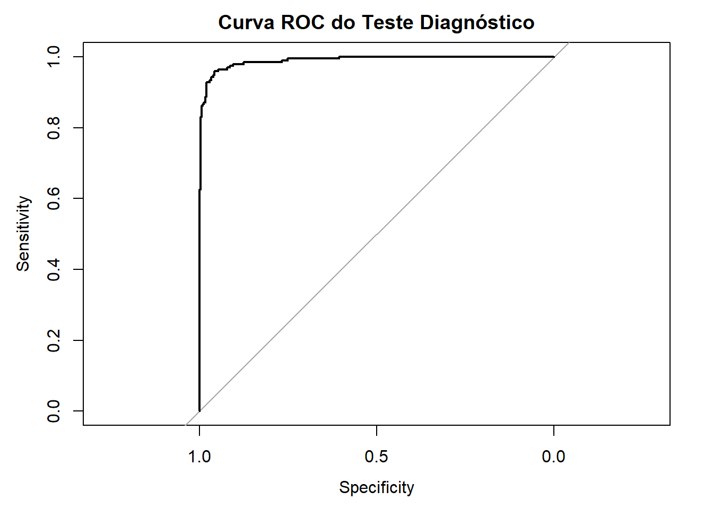
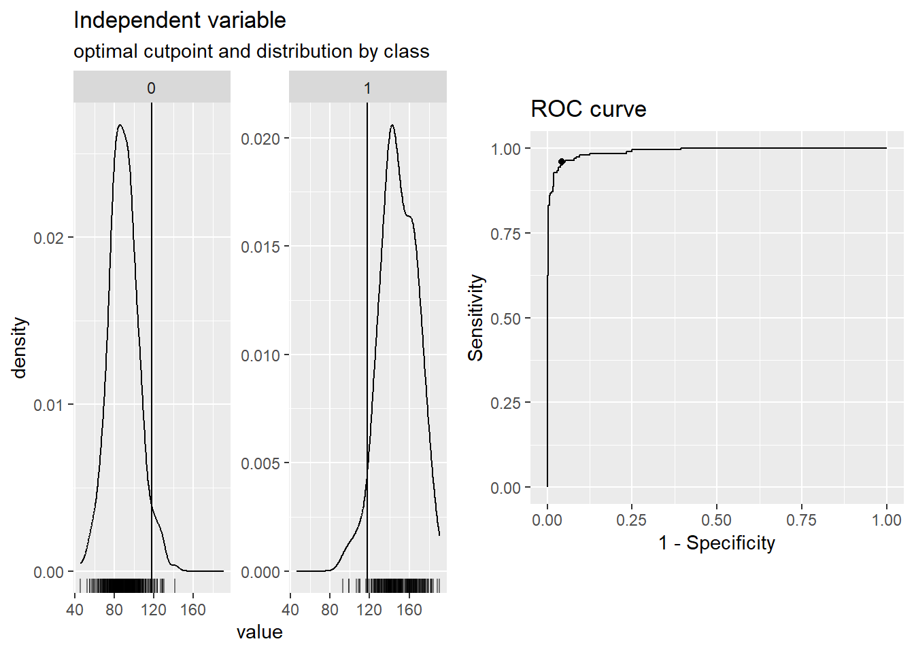

pacman::p_load(
rio, # importa arquivos
tidyverse, # gestão dos dados + gráficos no ggplot2
janitor, # adiciona números absolutos e porcentagens às tabelas
pROC, # construção da curva ROC
epiR, # cálculo das métricas de avaliação
cutpointr # grafico da curva ROC
)Análise de dados: Avaliação de um Teste Diagnóstico para Diabetes
Contexto do Problema
Um novo teste diagnóstico para diabetes foi desenvolvido por uma equipe de pesquisadores. Esse teste visa detectar a presença da doença com maior eficiência e menor custo em comparação ao teste de referência, que é o exame de glicemia em jejum. Antes de sua implementação na prática clínica, é necessário avaliar sua acurácia diagnóstica.
Objetivo do Estudo
Avaliar a performance do novo teste diagnóstico em relação ao padrão-ouro (exame de glicemia em jejum).
Metodologia
Amostra do Estudo
Foram selecionados 500 indivíduos aleatoriamente em uma unidade de saúde. Cada participante realizou tanto o novo teste diagnóstico quanto o exame de glicemia em jejum.
Coleta de Dados
Os participantes foram classificados em dois grupos:
- Doença presente: Indivíduos diagnosticados com diabetes pelo exame de glicemia em jejum.
- Doença ausente: Indivíduos sem diagnóstico de diabetes pelo exame de glicemia em jejum.
Os resultados do novo teste diagnóstico foram comparados ao exame de glicemia em jejum para determinar a acurácia do teste.
Fonte dos dados:
Carregando os pacotes R
Carregando os dados
dados = rio::import("https://raw.githubusercontent.com/tiagomartin/est104/refs/heads/master/dados/teste_diabetes.csv")
dados %>%
str()'data.frame': 500 obs. of 4 variables:
$ V1 : int 1 2 3 4 5 6 7 8 9 10 ...
$ doenca : int 0 1 0 1 1 0 0 1 0 0 ...
$ teste_positivo: int 0 1 0 1 1 0 0 1 0 0 ...
$ glicemia : num 73.2 147.8 103.1 110.3 165.7 ...Tabela de contingência das variáveis doença e teste positivo
tabela = table(Referencia = dados$doenca, Teste = dados$teste_positivo)
tabela Teste
Referencia 0 1
0 278 27
1 20 175Cálculo das Métricas
metr = epi.tests(tabela)
metr Outcome + Outcome - Total
Test + 278 27 305
Test - 20 175 195
Total 298 202 500
Point estimates and 95% CIs:
--------------------------------------------------------------
Apparent prevalence * 0.61 (0.57, 0.65)
True prevalence * 0.60 (0.55, 0.64)
Sensitivity * 0.93 (0.90, 0.96)
Specificity * 0.87 (0.81, 0.91)
Positive predictive value * 0.91 (0.87, 0.94)
Negative predictive value * 0.90 (0.85, 0.94)
Positive likelihood ratio 6.98 (4.91, 9.93)
Negative likelihood ratio 0.08 (0.05, 0.12)
False T+ proportion for true D- * 0.13 (0.09, 0.19)
False T- proportion for true D+ * 0.07 (0.04, 0.10)
False T+ proportion for T+ * 0.09 (0.06, 0.13)
False T- proportion for T- * 0.10 (0.06, 0.15)
Correctly classified proportion * 0.91 (0.88, 0.93)
--------------------------------------------------------------
* Exact CIsDiscussão dos Resultados
A prevalência real (\(pr\)) de diabetes é função dos resultados do exame de referência enquanto que a prevalência aparente (\(pa\)) é função dos resultados da aplicação do teste, ou seja,
\[pr = \dfrac{298}{500} \approx 0,60 \text{ e } pa = \dfrac{305}{500} = 0,61\]
O novo teste diagnóstico apresentou alta sensibilidade (93%), indicando que ele identifica corretamente a maioria dos indivíduos com diabetes. A especificidade de 87% sugere que o teste também é eficaz em descartar aqueles sem a doença.
Os valores preditivos indicam a confiabilidade dos resultados do teste: 91% das pessoas com teste positivo realmente têm diabetes, enquanto 90% das pessoas com teste negativo realmente não têm a doença.
A acurácia global de 91% sugere que o teste é uma ferramenta útil, mas deve ser avaliado em combinação com outros fatores clínicos antes de sua adoção generalizada.
Note que o valor \(RV_+ = 6,98\) indica que um resultado positivo é aproximadamente 7 vezes mais provável em pacientes com diabetes do que os não doentes, enquanto que o resultado negativo (\(RV_- = 0,08\)) é 12,5 vezes \(\left( \dfrac{1}{0,08}=12,5 \right)\) mais provável em pacientes não doentes.
Outras interpretações
False \(T_+\) proportion for true \(D_-\) = 0,13: Proporção de falsos positivos (\(PFP\)) entre aqueles que realmente não têm a doença (\(D_-\)), ou seja, 13% das pessoas sem a doença foram classificadas erroneamente como positivas pelo teste. Um teste com alta proporção de falsos positivos pode levar a diagnósticos errôneos e ansiedade desnecessária para pacientes saudáveis. Se esse valor for alto, pode ser necessário aumentar a especificidade do teste.
False \(T_-\) proportion for true \(D_+\) = 0,07: Essa é a proporção de falsos negativos (\(PFN\)) entre aqueles que realmente têm a doença (\(D_+\)), ou seja, 7% das pessoas com a doença foram classificadas erroneamente como negativas pelo teste. Um teste com falsos negativos pode perder casos reais da doença, o que pode ser perigoso, especialmente se a doença exigir tratamento precoce. Se esse valor for alto, pode ser necessário aumentar a sensibilidade do teste.
False \(T_+\) proportion for \(T_+\) = 0,09: Essa é a proporção de falsos positivos entre todos os testes positivos (\(T_+\)), ou seja, entre todos os pacientes que tiveram um teste positivo, 9% eram na verdade saudáveis. Isso afeta o Valor Preditivo Positivo (\(VPP\)). Se essa proporção for alta, significa que um teste positivo nem sempre confirma a doença.
False \(T_-\) proportion for \(T_-\) = 0,10: Essa é a proporção de falsos negativos entre todos os testes negativos (\(T_-\)), ou seja, entre todos os pacientes que tiveram um teste negativo, 10% na verdade tinham a doença. Isso afeta o Valor Preditivo Negativo (\(VPN\)). Se essa proporção for alta, significa que um teste negativo nem sempre exclui a doença.
Índice de Youden e Odds Ratio
metr$detail statistic est lower upper
1 ap 0.61000000 0.56569956 0.6529917
2 tp 0.59600000 0.55152589 0.6393322
3 se 0.93288591 0.89824865 0.9585262
4 sp 0.86633663 0.81151436 0.9100326
5 diag.ac 0.90600000 0.87696239 0.9301138
6 diag.or 90.09259259 49.03156269 165.5398032
7 nndx 1.25121596 1.15133247 1.4089210
8 youden 0.79922254 0.70976302 0.8685588
9 pv.pos 0.91147541 0.87381587 0.9408505
10 pv.neg 0.89743590 0.84604758 0.9362173
11 lr.pos 6.97936863 4.90648290 9.9280049
12 lr.neg 0.07746884 0.05055819 0.1187032
13 p.rout 0.39000000 0.34700826 0.4343004
14 p.rin 0.61000000 0.56569956 0.6529917
15 p.tpdn 0.13366337 0.08996739 0.1884856
16 p.tndp 0.06711409 0.04147376 0.1017513
17 p.dntp 0.08852459 0.05914948 0.1261841
18 p.dptn 0.10256410 0.06378268 0.1539524Temos que o índice de Youden foi igual a 0,80 (0,71;0,87), indicando que o novo teste é um excelente, altamente confiável para o diagnóstico de diabetes. Temos ainda que, a odds ratio foi igual a 90,09 (49,03; 165,54), indicando que a chance de um resultado de teste positivo é de 90 vezes em pacientes com diabetes em relação à do grupo sem a doença.
Intervalos de confiança
- Intervalo de Confiança para Sensibilidade, Especificidade, VPP, VPN e Proporções
Essas métricas seguem uma distribuição binomial, e o intervalo de confiança pode ser calculado usando a fórmula do IC binomial de Wald:
\[IC = \hat{p} \pm z_{\frac{\alpha}{2}} \times \sqrt{\dfrac{\hat{p}(1-\hat{p})}{n}}\]
em que,
- \(\hat{p}\) é a estimativa da proporção (por exemplo: sensibilidade = 0,93).
- \(z_{\frac{\alpha}{2}}\) é o valor crítico da distribuição normal para um nível de confiança de \((1 - \alpha)\)% (1,96 para 95%).
- \(n\) é o número total de indivíduos no grupo correspondente (por exemplo: para sensibilidade, n = 298).
- Intervalo de Confiança para Razões de Verossimilhança (Likelihood Ratios)
Os \(RV_+\) e \(RV_-\) não seguem diretamente uma distribuição binomial, então aplicamos a transformação logarítmica para calcular o IC:
\[IC = \exp(\ln(\hat{RV}) \pm z_{\frac{\alpha}{2}} \times SE)\]
em que o erro padrão (\(SE\)) é dado por
\[SE = \sqrt{\dfrac{1}{a} - \dfrac{1}{a+b} + \dfrac{1}{d} - \dfrac{1}{c+d}}\]
- Intervalo de Confiança para o Índice de Youden
Para calcular o intervalo de confiança (IC) do Índice de Youden, usamos a seguinte fórmula:
\[SE_J = \sqrt(SE^2_s + SE_e^2)\] sendo \(SE_s\) o erro paddrão da sensibilidade e \(SE_e\), o r=erro padrão da especificidade. Assim, o IC do Índice de Youden é dado por:
\[IC = J \pm z_{\frac{\alpha}{2}} \times SE_J\]
- Intervalo de confiança para odds ratio
O intervalo de confiança para o \(OR\), pode ser calculado com a seguinte fórmula:
\[IC = \exp(\ln(OR) \pm z_{\frac{\alpha}{2}} \times SE_{\ln(OR)})\] sendo
\[SE_{\ln(OR)} = \sqrt{\dfrac{1}{a} + \dfrac{1}{b} + \dfrac{1}{c} + \dfrac{1}{d}}\]
E se a variável desfecho for contínua?
Vamos considerar a variável Índice de Glicemia para avaliação do diagnóstico.
Curva ROC e Área Sob a Curva (AUC)
roc_obj = pROC::roc(dados$doenca, dados$glicemia)Setting levels: control = 0, case = 1Setting direction: controls < casesplot(roc_obj, main = "Curva ROC do Teste Diagnóstico")
auc_valor = pROC::auc(roc_obj)
##Área sob a Curva (AUC)
auc_valorArea under the curve: 0.9901A Curva ROC (Receiver Operating Characteristic) avalia a capacidade do teste em distinguir entre pacientes com e sem diabetes. O principal indicador de performance é a Área Sob a Curva (AUC):
- AUC = 1.0 → Teste perfeito (classifica todos corretamente).
- AUC ≥ 0.9 → Teste excelente.
- AUC entre 0.8 e 0.9 → Teste muito bom.
- AUC entre 0.7 e 0.8 → Teste razoável.
- AUC entre 0.5 e 0.7 → Teste fraco.
- AUC = 0.5 → O teste não tem poder discriminatório (equivalente ao acaso).
Se obtivermos, por exemplo, AUC = 0,9901, isso indica que o teste tem um excelente desempenho em distinguir pacientes com e sem diabetes.
Escolha do Melhor Ponto de Corte
Um teste com desfecho contínuo precisa de um ponto de corte para ser usado na prática clínica. O índice de Youden é um critério comum para encontrar o limiar ideal:
\[J = Sensibilidade+Especificidade−1\]
O melhor ponto de corte é aquele que maximiza simultaneamente a sensibilidade e a especificidade. Se priorizamos detectar todos os casos (sensibilidade alta), podemos escolher um ponto de corte mais baixo. Se queremos evitar falsos positivos, podemos escolher um ponto de corte mais alto.
cp = cutpointr(dados, glicemia, doenca,
method = maximize_metric, metric = youden)- 1
- A função cutpointr() do pacote cutpointr determina e avalia pontos de corte ideais baseados em uma métrica específica. Para uma introdução ao pacote, consulte vignette(“cutpointr”, package = “cutpointr”).
Assuming the positive class is 1Assuming the positive class has higher x valuescp$optimal_cutpoint[1] 117.7534Podemos observar que para este exemplo, o ponto de corte ótimo foi igual a 117,7534, indicando que pacientes com valores acima desse limite são mais propensos a ter diabetes, enquanto valores abaixo desse limite indicam baixo risco.
## Algumas métricas de avaliação
summary(cp)Method: maximize_metric
Predictor: glicemia
Outcome: doenca
Direction: >=
AUC n n_pos n_neg
0.9901 500 195 305
optimal_cutpoint youden acc sensitivity specificity tp fn fp tn
117.7534 0.9164 0.958 0.959 0.9574 187 8 13 292
Predictor summary:
Data Min. 5% 1st Qu. Median Mean 3rd Qu. 95%
Overall 45.75192 69.90402 85.84629 101.76185 112.67595 140.95893 170.6583
0 45.75192 66.15261 80.00629 88.80496 89.59556 98.61755 116.4540
1 93.02906 119.23256 137.15388 148.79227 148.77605 162.67633 177.8412
Max. SD NAs
190.8391 33.28575 0
141.3164 15.06062 0
190.8391 18.62637 0## Curva roc
plot(cp)
Se o objetivo for detectar o máximo de casos de diabetes (exemplo: triagem populacional), escolhemos um ponto de corte com alta sensibilidade (aceitando mais falsos positivos). Se o objetivo for garantir que apenas os verdadeiros doentes sejam diagnosticados (exemplo: evitar sobretratamento), escolhemos um ponto de corte com alta especificidade (aceitando mais falsos negativos). Em muitos casos clínicos, o ponto de corte pode ser ajustado com base em fatores de risco individuais.